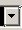

Click on the Transform Editor button.
 A new window called the Transform Editor will open, as shown below.
A new window called the Transform Editor will open, as shown below.
When you open the transform editor, the first thing you'll see is probably a large black screen with some triangles and a grid on it..
The first thing you'll wand to learn is how to move around in this window.
Right-click and hold on the black grid. Your mouse will turn into a Translation symbol
 . Still holding the right mouse button down, move your mouse around. You'll drag the grid around. This lets you reposition your editor window so that you can concentrate on whatever part you want.
. Still holding the right mouse button down, move your mouse around. You'll drag the grid around. This lets you reposition your editor window so that you can concentrate on whatever part you want.
To zoom in and out of your editor window, scroll with the mouse wheel. Scrolling up will zoom in, whereas scrolling down will zoom out. If you don't have a mouse wheel, you can zoom by using the + and - keys across the top of your keyboard (not the ones on the number pad, but the ones that also double as underscore and equals.
In the upper left-hand corner of the transform editor, you will see the new blank flame button. Click on it.
You will see a single red triangle in your transform editor.
The first thing you should note is the large black grid with the triangle. This triangle is called a transform, because changing it transforms the fractal into strange and different shapes. I shall call it a transform from now on.
Note: The words "transform" and "triangle" have different meanings in Apophysis. If you look on the right side of the transform editor, you'll notice that there is a tab that says 'triangle' and a tab that says 'transform.' Both tabs have stuff in them that you can press with your mouse or type in numbers that will move the triangle around. Both do it in slightly different ways that, unless you know the reasons behind them, will drive you crazy. Heck, I know the reasons behind them, and they still drive me crazy. But I'm getting ahead of myself: the reasons will be explained in the next chapter.
Hover your mouse over the red triangle until the move icon shows up.
Click and hold down the left mouse button to drag the triangle. When you click, two white axis lines will appear, as seen below.
Drag the transform. You will notice that two dull gray axis lines will follow the triangle, another pair of dull gray axis lines stay behind, as seen below. The lines that stay behind show where you were moving from, while the lines that follow the triangle tell where you are moving to.
Let go of the transform. The next thing to notice is the gray triangle we just uncovered. That gray triangle is called the reference transform. You'll learn more about why the reference transform is important in later tutorials. For right now, you'll use it to help measure where to put your other transforms.
You can't move the gray reference transform. However, you can move the red triangle.
Let's learn a couple more ways to move the red triangle with the mouse. Notice that the red triangle has two solid red lines and a dotted red line. Hover your mouse over the dotted red line until the scale icon appears beside the mouse pointer. The dotted line will also be highlighted. This means that you can make the transform bigger or smaller. Click and hold on it with the left mouse button and drag to make the transform bigger or smaller.
Now hover your mouse over one of the solid red lines on the transform until the rotate icon
 appears. The line you are hovering over will also highlight. Click and hold with the left mouse button. A circle and two white axis lines will appear. The circle is centered around where the transform will rotate, as shown below.
appears. The line you are hovering over will also highlight. Click and hold with the left mouse button. A circle and two white axis lines will appear. The circle is centered around where the transform will rotate, as shown below.
Drag the mouse to rotate the transform.
The next thing to notice is that each point on the triangle is labeled. One is labeled O, one is labeled X, and one is labeled Y.
Hover your mouse over the O point until the translate icon
 shows up. The 0 point will highlight white.
Left-click and hold on the O point. You will notice two pairs of axis lines appear, as seen below.
shows up. The 0 point will highlight white.
Left-click and hold on the O point. You will notice two pairs of axis lines appear, as seen below.
These axis lines are slightly different than the lines you saw earlier when selecting the whole transform and moving it. First, one pair always stays on the X and Y axis, instead of staying behind where the transform used to be. The other pair follows the transform around as usual.
So why is there a difference between moving with the O point and moving the whole triangle? O is shorthand for origin. If you notice, the reference transform has an O point as well, and one pair of axis lines always goes through it. The reference transform's O point is the origin of the grid you are drawing your fractal on, and the red transform's O point shows how far from that origin your transform has moved, because that distance is important in the making of the fractal. When you use the O point to move the transform, Apophysis assumes that you want to know the distance between the reference transform's O point the red transform's O point, and puts the axis lines in to help show you that distance, as seen below.
By contrast, when you move the whole transform, Apophysis assumes you want to know where the red transform was before you started moving it, and so leaves a pair of axis lines to show where the red transform's O point used to be before you started moving it, as seen below.
Now let's take a look at the other two points on the triangle: the X point and the Y point.
Let's start with the X point.
Hover your mouse over the X point until the translate icon
 shows up. The X point will highlight red.
Left click and hold on the X point and start dragging it around. You'll notice ttwo pairs of axis lines appear, and you'll also notice that only the x point moves--the whole transform does not move. This allows you to skew the transform.
shows up. The X point will highlight red.
Left click and hold on the X point and start dragging it around. You'll notice ttwo pairs of axis lines appear, and you'll also notice that only the x point moves--the whole transform does not move. This allows you to skew the transform.
Notice that one pair of axis lines goes through the O point on the transform, and other pair of axis lines goes through the X. This is because Apophysis thinks it is important for you to know the distance between the O point and the X point, because that distance is important when forming the fractal. Because of this Apophysis places the axis lines so that you can see the distance.
Moving the Y point acts exactly the same as moving the X point, with the sole exception that when you hover your mouse over the Y point it turns blue.
Now that we know how to move one transform, let's give ourselves a few more transforms to play with.
Click on the red transform to select it.
On the right-hand side of the Transform Editor, you will see the Selected Transform Menu. If you click on the arrow,  a drop-down menu will appear.
Right now the dropdown menu only has one transform, but as you add more transforms to your fractal the Selected Transform Menu will help you manage them.
Up until now, our fractal has been a bit boring. In order to have a wing by the end of this, we need to add a few more transforms. Specifically, two more transforms. Go to the top of the Transform Editor and click on the add transform button. This will add a new transform on top of the reference triangle. You'll notice that it's yellow, and also notice that the Selected Transform Menu now shows another transform, as seen below.
Click the new transform button again. This will add another new transform, this time in green. You'll notice that you can no longer see the yellow transform because it is hidden by the green triangle.
This can sometimes cause problems you want to move the yellow transform with the mouse, because at first glance it seems like you have to move the green transform first. If you use just a mouse, you will have to move the green transform first. This does not really matter for this tutorial, but when working with later fractals there will be times when you want to move transforms that are hidden below other transforms. In that case, you will need to move the transforms using either the Transform tab or the Triangle tab.
Up until now, our fractal has been a bit boring- just a blank screen, or perhaps a blur. But now we get to the fun part, where we start seeing things!
All right. You know how to move transforms. Now lets use them to make a pretty fractal.
Move your transforms into this arrangement:
The closer you get to this exact arrangement, the more your fractal will look like a wing. You can see the image it is supposed to look like in the preview window in the upper right-hand corner of the fractal box.
Moving transforms with the mouse is fun, but you can't get the transforms into exactly the same positions as shown in last section's picture. To get exactly the same position, you need to type the locations in by hand. As a result, I'm going to teach you how to move the fractal with the Transform tab.
Below the transform menu you will see a set of tabs.
Within these tabs you will find almost every option you need to control how your fractal works. These tabs will look slightly different in different versions of Apophysis, but as of this writing every version has a Triangle tab, a Transform Tab, a Color tab, a Variations tab, and a Variables tab. Some versions of Apophysis have a Xaos tab that is not pictured here because I am using screenshots from an older version of Apophysis. Future versions may have even more tabs as programmers decide to add more features. In this particular tutorial we are only going to talk about the Transform tab and the color tab.
Click on the Transform tab . The Transform tab will bring up a bunch of options shown below.
The only options we care about for the moment are the top set of X, Y and O options.
Here's where things begin to get a little tricky.
Select any transform. I'm going to select the first (red) transform, but any of transform will work for this demonstration.
Notice that the transform has three points: O, X, and Y, and there are three fields corresponding to each point.
Now for the slightly confusing part. The transform's O point is measured from the Reference Transform's O point. So, in the picture below, Transform 1's O point is -0.101175 units over from the reference transform's O point and 0.979277 units up from the reference transform's O point.
So far so good. Let's take a look at the X and Y points. The X and Y points are measured from the current transform's O point, NOT from the reference triangle's O point. For example, the red transform's X point is .595029 units over form the red transform's O point ant 0.055193 units up from the red transform's O point.
The Y point of the red transform is also measured from the red transform's O point in exactly the same way as the X point.
All of this has an interesting effect. If you move the transform's O point around on the screen, and watch the numbers in the boxes change in the transform tab, only the values for the O point change.
So to use the transform tab value boxes keep in mind that the transform's O point is measured from the reference transform's O point, and the transform's X and Y points are measured from the transform's own O point.
So, what does the transform tab give us, besides the chance to be really confused? Well, it will let you make exactly the same wing I made in this tutorial.
Select transform 1.
 and fill the following values into the transform tab value boxes.
and fill the following values into the transform tab value boxes.
Select transform 2 and fill in the following values into transform 2's transform tab value boxes.
Select transform 3
and fill in the following values into transform 3's transform tab value boxes.
Tada! You now have a wing shape!